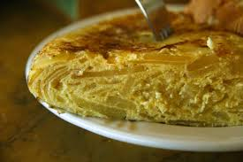

Tortilla de Patatas

Preparación:
- Pela y corta las patatas en láminas finas y la cebolla en juliana.
- Fríe las patatas y cebolla en abundante aceite a fuego medio hasta que estén blandas.
- Bate los huevos en un bol grande con una pizca de sal.
- Escurre bien las patatas y mézclalas con el huevo. Deja reposar 5 min.
- En una sartén con poco aceite, vierte la mezcla y cuaja por un lado.
- Dale la vuelta con un plato y cuaja por el otro lado.
- Sírvela jugosa o muy hecha, según prefieras.